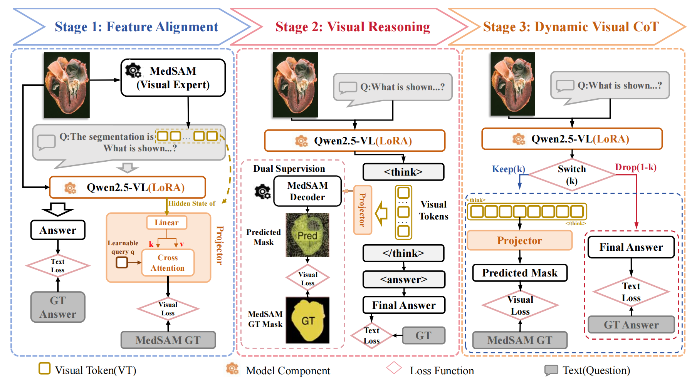

Methodology
Medical Visual Question Answering (Medical VQA) stands as a cornerstone of AI-assisted diagnosis, which needs both high accuracy and rigorous interpretability. The “black-box” diagnosis made to a patient, although it may be correct, will be unconvincing without verifiable visual evidence. However, current state-of-the-art Medical Vision-Language Models (VLMs) come to a fundamental bottleneck: the modality gap. When continuous and fine-grained visual signals (such as the boundaries of a lesion or texture gradients) are forcibly projected into a discrete textual space for reasoning, there is a lot of visual evidence ignored inevitably. This information loss is particularly detrimental in clinical practice, where the subtlest cues in visual content can matter to diagnosis. In that connection, the lack of direct visualization of reasoning has been a barrier to the application of medical AI systems applied to clinical scenarios.

The framework follows a progressive training strategy, including medical feature alignment, latent visual reasoning learning, and instruction tuning for complex clinical scenarios. During inference, MedVCoT can generate both textual answers and pixel-level visual evidence, making the reasoning process more transparent and clinically grounded.

Figure: Overview of the proposed MedVCoT methodology.